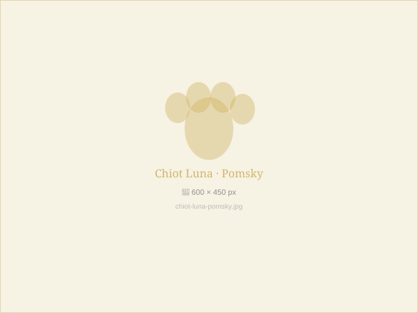
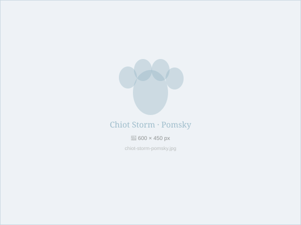

Available
Luna
- Silver and white coat, bicolour eyes
- DHPPiL vaccines, CH microchip, dewormed
- FCI pedigree · Health-tested parents
CHF 2'900
Reserve Luna →
Available
Storm
- Charcoal grey and white coat, blue eyes
- DHPPiL vaccines, CH microchip, dewormed
- FCI pedigree · Health-tested parents
CHF 2'800
Reserve Storm →
Reserved
Neva
- Orange sable coat, amber eyes
- DHPPiL vaccines, CH microchip, dewormed
- FCI pedigree · Champion bloodline
CHF 2'500
Join waiting list
Available
Arctic
- Black and white coat, ice blue eyes
- DHPPiL vaccines, CH microchip, dewormed
- FCI pedigree · Swiss champion sire
CHF 2'200
Reserve Arctic →
Available
Blizzard
- Pure white coat, sky blue eyes
- DHPPiL vaccines, CH microchip, dewormed
- FCI pedigree · ~8kg adult · Ideal for apartments
CHF 3'100
Reserve Blizzard →Can't find your perfect match?
Join our waiting list — we contact you first when a puppy matching your criteria becomes available.